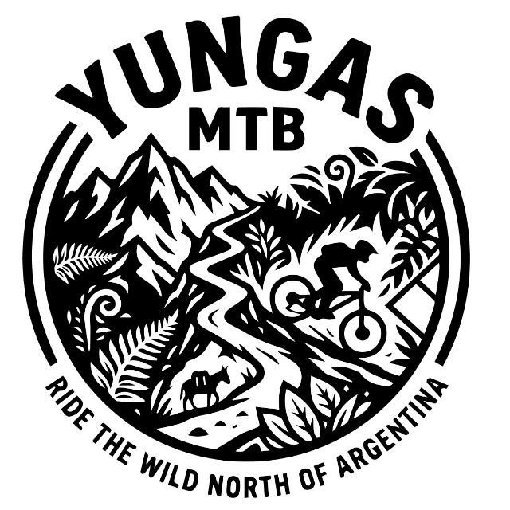

Senderos épicos de mountain bike en los paisajes más impresionantes de Argentina
Descubrí las mejores rutas para MTB en Salta
El clásico de Salta. Subida desafiante con vistas panorámicas increíbles de la ciudad y los valles. Sendero técnico con piedras sueltas y curvas cerradas.
Recorrido extenso por el valle con cambios de ritmo constantes. Terreno variado con sectores de arena, piedras y tierra compacta. Ideal para resistencia.
Sendero en la selva de yunga con vegetación densa y humedad. Descenso técnico con raíces, piedras y sectores estrechos. Experiencia única.
Perfecto para comenzar. Sendero suave con subidas graduales y descensos controlados. Ideal para familias y riders que se inician en MTB.
Sendero con mix de subida constante y secciones planas para recuperar. Vistas espectaculares del valle y la ciudad desde la cima.
La ruta más exigente. Territorio remoto con navegación compleja, escaladas pronunciadas y descenso extremo. Solo para experimentados.
Conocé el sistema de clasificación de senderos
Momentos increíbles en los senderos de Salta
Abril a Octubre ofrece temperaturas agradables y menos lluvias. Evitá enero-febrero por las tormentas.
Salta es seca y la altura deshidrata rápido. Llevá al menos 2L de agua por cada 2 horas de ride.
La radiación UV es intensa por la altura. Usá protector, gafas y gorra siempre.
Informá a alguien tu ruta, llevá kit básico de reparación y celular con carga completa.
¿Tenés dudas o querés organizar una salida? ¡Escribinos!
Salta, Argentina
info@mtbsalta.com
+54 387 123 4567